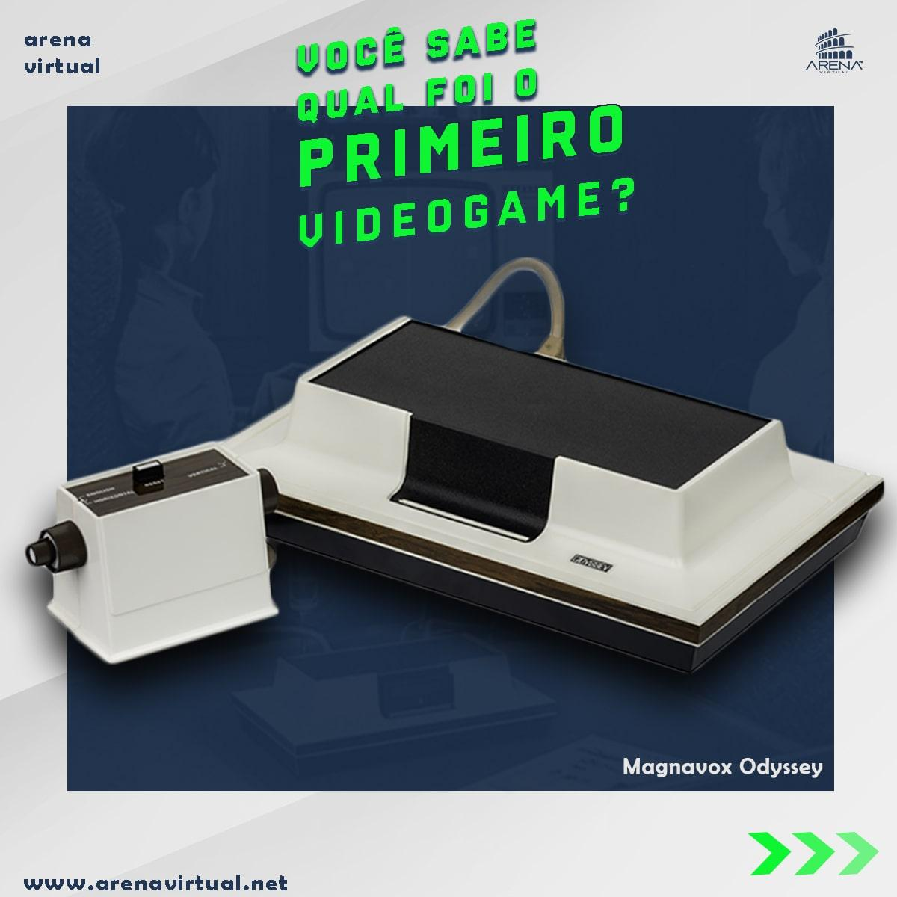
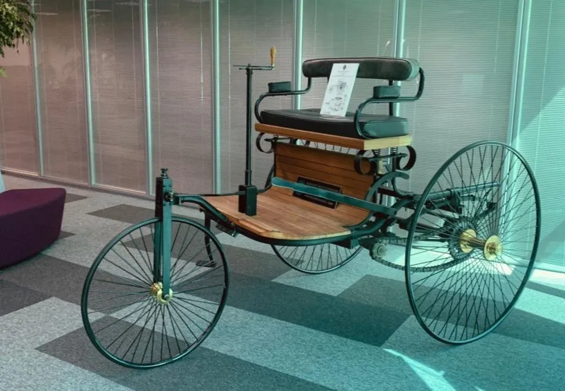
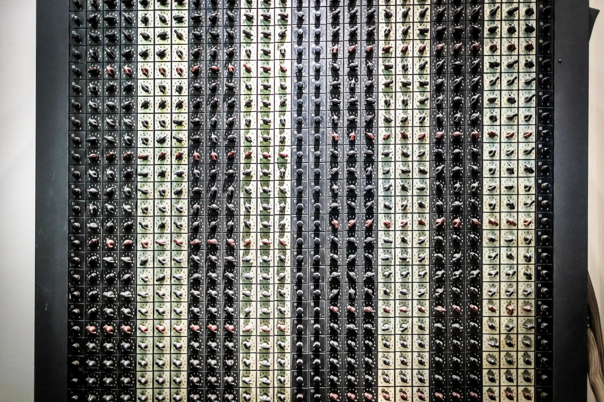

Meu primeiro post
Por: Rafael Kutz
Boas vindas esse é meu primeiro post, o primeiro Video game do mundo!!
Vou compartilhar conhecimentos Gerais.

Por: Rafael Kutz
Boas vindas esse é meu primeiro post, o primeiro Video game do mundo!!

Por: Rafael Kutz
Apesar da criação de Benz, somente no ano seguinte, Carl Benz apresentou a patente do veículo de três rodas com motor a gás ao Escritório Imperial de Patentes em Berlim, em 29 de janeiro de 1886.
Fonte: CNN Brasil

Por: Rafael Kutz
Essa nova era na resolução de problemas humanos teve início em 1946, quando os cientistas da Universidade da Pensilvânia, J. Presper Eckert e John Mauchly, construíram o ENIAC, o primeiro computador eletrônico programável de uso geral do mundo.
Fonte: Penn Today
Por: Rafael Kutz
O celular foi inventado por Martin Cooper, engenheiro da Motorola, no início da década de 1970. Em 3 de abril de 1973.
Fonte: Unifique
Por: Rafael Kutz
Hacker preso com R$ 632 mil em Curitiba se passava por funcionário de bancos para aplicar golpes, diz Gaeco.
Fonte: G1 Paraná
Por: Rafael Kutz
O Icon of the Seas é um navio de cruzeiro construído para a Royal Caribbean International para ser o primeiro e principal navio da classe Icon. A embarcação entrou em serviço em 27 de janeiro de 2024.
Fonte: Wikipedia
Por: Rafael Kutz
Em 1993, o cosmonauta russo Aleksandr Serebrov levou seu Game Boy original a bordo da missão espacial Soyuz TM-17. Ele passou seu tempo livre jogando Tetris.
Fonte: Smithsonian Institution